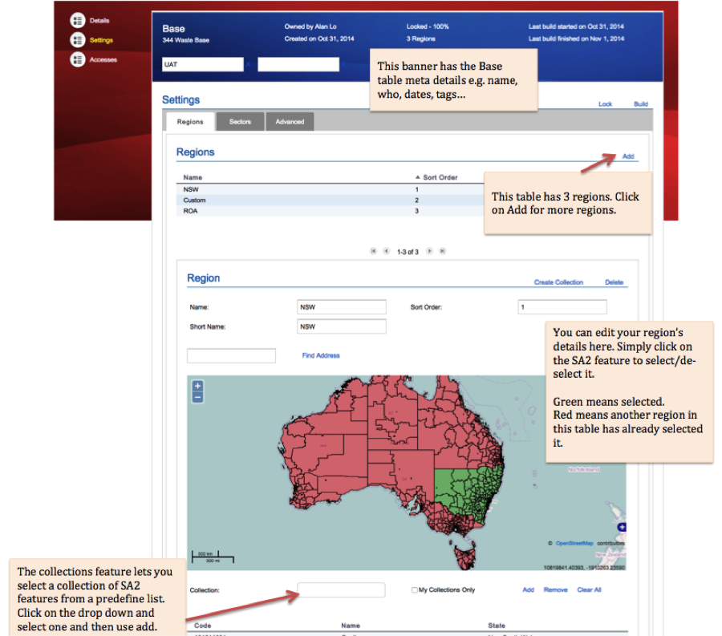

Module 2
Virtual Laboratories and eResearch Tools
Introduction
This module provides an overview of the eResearch Tools and the Virtual Laboratories that are offered by NeCTAR services. Both the eResearch Tools and the Virtual Labs offer “ready to go” tools for researchers to use.
The NeCTAR project has funded the development of customised cloud services, software and portals for particular research disciplines or workflows. Among those services, you may find one which is useful for your research activities. In this module, we will discuss the eResearch tools and Virtual Laboratories.
In a few words,
-
Virtual Laboratories provide online platforms for research activities in several research discipline areas.
-
eResearch Tools provide online software tools for common research tasks.
Video
The following video goes through the content in this module.
https://www.youtube.com/watch?v=ScPVDa_EGWQ
Conventions
The notation throughout the training documents can be interpreted as follows:
Words in italics are used for names and terminology, e.g. name of a software, or name of a computing concept. It may also just emphasise a word in the traditional way. Quotations are also written in italics and are put in between quotatioin marks.
Words in bold are used to highlight words which identify important concepts of a paragraph, to make it easier for users to skim through the text to find a paragraph which explains a certain idea, concept or technology.

Additional information which is optional to read is displayed in info boxes like this one.

Important information is displayed in boxes like this one.

Definition of terms are displayed in boxes of this style.

Possibly specific prerequisites for reading a particular section are contained in this type of box at the beginning of a section.
Virtual Laboratories
NeCTARs Virtual Laboratories are creating a new era of connectivity for Australian researchers. They aim at connecting researchers with existing and new research facilities, data repositories and computational tools and streamlining research workflows. They help to create new opportunities for collaboration, efficiencies and innovation.
A Virtual Laboratory can be seen as a portal to several software tools, data, storage and documentation in an integrated and interactive environment, enabling researchers across the world to collaborate and share information.
NeCTAR Virtual Laboratories are developing online, discipline-specific research environments that integrate data repositories, computational tools and workflows.
Aims
-
Share resources which are otherwise available to a limited number of users only (e.g. due to geographical distances – share your data and tools with collaborators).
-
providing an environment which enables a group of researchers around the world to work together on a common set of problems.
-
allow scientists located around the world to collaborate efficiently - not simply at a meeting, but in an ongoing way.
-
-
Provide an interactive environment for creating and conducting simulated experiments.
-
Provide remote-access to Labs to students and researchers.
-
Encourage students by arousing curiosity.
-
Help students to learn basic and advanced concepts through remote experimentation and providing tools for learning (e.g. web-resources, video lectures and demonstrations).
-
Consists of any or several of:
-
Tools for processing and analysis
-
Storage
-
Models (e.g. ocean circulation, waves, water quality, and marine biogeochemistry at the Marine Virtual Laboratory)
-
Networks of observing stations / sensors (e.g.Marine Virtual Laboratory)
-
Access to data sets
-
Support teams
-
Tutorials
-
Management of clusters (e.g. http://www.genome.edu.au/)
-
Alveo Virtual Laboratory
Target field(s): Human Communication Science, Statistical Computing, Speech databases
Website: http://alveo.edu.au/
See also: http://alveo.edu.au/category/news/
For help visit: https://support.alveo.edu.au/support/home
Alveo is a web-based data discovery application for examining collections of human communication data. It can be accessed using any web browser. It provides on-line infrastructure for accessing human communication data sets (speech, texts, music, video, etc.) and for using specialised tools for searching, analysing and annotating that data. There are a number of tools available:
-
The Alveo Data Collections are aggregated from other sources and are configured for quick searching. In particular, Alveo permits searching on the content of these data sets.
-
The Galaxy workflow engine, that was developed for bioinformatics research, has been adapted so that it is useful for working with human communication data and integrated into Alveo.
-
The R Project for Statistical Computing provides a free software environment for statistical computing and graphics.
-
EMU is a collection of software tools for the creation, manipulation and analysis of speech databases.
For more information, please refer to the website.
Biodiversity and Climate Change (BCCVL)
Target field(s): Ecology, environmental and climate change science, land use planning, natural resources.
Website: http://www.bccvl.org.au/

The Biodiversity and Climate Change Virtual Laboratory (BCCVL) is a decision support and scenario planning tool that simplifies the process of biodiversity and climate change modelling. It connects the research community to Australia’s national computation infrastructure by integrating a suite of tools in a coherent online environment. Users can access biodiversity, climate and environmental data from global online datasets or upload their own datasets, perform data analysis such as Species Distribution Models with a suite of 19 different algorithms, and easily visualise, interpret and evaluate the results of the models.
Intended users
The BCCVL is designed for ecologists, environmental and climate change scientists, students, and consultants. Beyond this, the BCCVL makes for a great training platform for both researchers, consultants and those involved in land use planning and require decision support tools to help mitigate risk and determine how to best use available natural resources.
Use Cases
Species Distribution Model Experiments Used to investigate the potential distribution of a species under current climatic and environmental conditions. The BCCVL provides access to 17 Species Distribution Model algorithms which can be run simultaneously.
Climate Change Experiments
With the BCCVL, you can investigate the distribution of a species under potential future climatic conditions. Take the results of your Species Distribution Modelling experiment, and project that distribution for a certain year in the future with the climate information from one of several climate models. Select one of several greenhouse gas emissions scenarios to influence the climate models. Future climates are available from 2015 to 2085.
Biodiverse Experiments
Biodiverse is a system to compute indices of biodiversity. In the BCCVL it calculates gridded estimates of species richness and endemism based on previously run SDMs.
Species Trait Model Experiment (currently under development)
Used to investigate the potential distribution of a species under current climatic and environmental conditions based on one or more traits/characteristics of that species (e.g. size, colour, heat tolerance)
Ensemble Analysis (currently under development)
To reduce the uncertainty of using the single-model, or single-emissions-scenario approach to investigating climate change impacts on biodiversity, you can run an ensemble experiment. You can run several different species distribution models for one species, when assessing the distribution under current climate. If looking at a climate change scenario, you can use the output of several different climate models with one species distribution model, or take the average of the climate model outputs and input this into several different species distribution models. This approach can also be used to assess a range of climate change emissions scenarios.
How to get access
The BCCVL is free to use. Anyone with an Australian institutional ID (recognised by the Australian Access Federation) can log in and begin modelling. Individuals may also request a local login account and we will create one for you!
Videos
https://www.youtube.com/watch?v=ACj6BsLoMXo https://www.youtube.com/watch?v=njs-EaN00qQ
Characterisation Virtual Laboratory
Target field(s): Image processing in various fields; Structural biologists, microscopists.
Website: https://www.massive.org.au/cvl
See also: http://nectar.org.au/labs/characterisation-virtual-lab/
Imaging techniques, broadly known as “Characterisation”, are used in a number of research fields, from structural biology, to neuroimaging, and the analysis of energy materials.
The Characterisation Virtual Lab has developed many tools, including a remote desktop for processing data from microscopes or the Australian Synchrotron on a supercomputer which has graphics processors (GPUs) for fast image processing.
In summary, what the Characterisation Virtual Lab does:
- Integrating key Australian imaging instruments with specialised computing capabilities.
- Developing a common desktop environment for analysis and collaboration.
- Creating four desktop environments for data processing in neuroscience, structural biology, atom probe and X-ray science. Each driver is led by a world-class research group, is supported by an Australian research consortium and is in a national research priority area. The results from this development will be distributed to the community through the CVL Workbenches.
- Integrate key Australian imaging instruments with specialised computing capabilities.
For more information please refer to the website.
Genomics Virtual Laboratory
Target field(s): Genomics
Website: http://www.genome.edu.au/
See also: http://nectar.org.au/labs/taking-the-it-out-of-bioinformatics/
The Genomics Virtual Laboratory takes the IT out of Bioinformatics. It provides a cloud-based suite of genomics analysis tools that would normally require specialist assistance. In particular, it provides:
-
A web portal provides a growing suite of genomics analysis tools that biologists can start working with immediately, with no setup required.
-
Data that can be analysed easily on the Australian Research Cloud.
-
A workbench for reproducible results, a command line interface to support bioinformaticians
-
Tutorials to help biologists learn analysis techniques.
For more information, please refer to the website.
Endocrine Genomics (endoVL)
Target field(s): Endocrinology;
Subject(s): Adrenal Tumors, Type-1 Diabetes, Disorder of Sex Disease, Niemann-Pick Disease, Atypical Femur Fracture and Polycistic Ovarian Syndrome.
Website: https://endovl.org.au
See also: http://nectar.org.au/labs/solving-endocrine-disorders-without-borders/
The Endocrine Virtual Laboratory (endoVL) is a national initiative to establish a range of clinical registries supporting genetically focused clinical trials and studies targeted to the needs of the endocrine research communities, networks and societies across Australia.
- Easily and securely access clinical and bioinformatics data sets.
- Share data sets and collaborate nationally and internationally with clinical communities and patients.
The establishment of endoVL shall demonstrate how Australia-wide endocrine research can be augmented and translated into a clinical (translational) context, leveraging and integrating –omics capabilities. This will realise the vision of personalised e-Health by providing a seamless, user-oriented research environment and will show how –omics research can itself be directly shaped from contextual clinical information on the patients involved.
For more information please refer to the website.
Humanities Virtual Laboratory (HuNI)
Target field(s): Humanities, Speech Science, Computer Science, Behavioural science, Linguistics, Music cognition and Musicology, Sonics and Acoustics.
Website: http://www.huni.net.au
See also: http://nectar.org.au/humanities-virtual-laboratory/
 The Humanities Virtual Lab (HuNI) is a new research and discovery platform developed by and for humanities and creative arts scholars. HuNI is integrating many important cultural data sets for researchers in the humanities: it combines information from 30 of Australia’s most significant cultural datasets. These datasets comprise more than 2 million authoritative records relating to the people, organisations, objects and events that make up Australia’s rich cultural heritage. HuNI also enables researchers to work with and share this large-scale aggregation of cultural information.
The Humanities Virtual Lab (HuNI) is a new research and discovery platform developed by and for humanities and creative arts scholars. HuNI is integrating many important cultural data sets for researchers in the humanities: it combines information from 30 of Australia’s most significant cultural datasets. These datasets comprise more than 2 million authoritative records relating to the people, organisations, objects and events that make up Australia’s rich cultural heritage. HuNI also enables researchers to work with and share this large-scale aggregation of cultural information.
The Human Communication Science Virtual Laboratory aims at cross-disciplinary interaction and information sharing between researchers. It is built for researchers from several disciplines: speech science, computer science, behavioural science, linguistics, music cognition and musicology, sonics and acoustics.
For more information please refer to the website.
https://www.youtube.com/watch?v=qiFj7JjlaSQ
Industrial Ecology (IELab)
Target field(s): Industrial ecology (IE), regional economics, transition analysis, MRIO tables, Hybrid LCA data, economic and environmental data.
Website: http://ielab.info
See also: http://nectar.org.au/labs/tracking-the-global-supply-chain/
 The Industrial Ecology Virtual Laboratory (IELab) is a cloud-based research platform
for enviro-socio-economic modelling. It provides the most comprehensive,
environmentally extended input-output model available for use in Australia. It
distinguishes geographical and industry detail at high resolution, spans a time period of
more than twenty years, and is constantly updated as new data becomes available.
Dozens of organisations, researchers and practitioners collaborate in the IELab to build
and modify their own customised input-output analytics in fields such as regional and
environmental economic modelling, life-cycle assessment, carbon footprinting and
environmental impact assessment. The IELab brings together economic, environmental
and social data in unprecedented detail and significantly boosts Australia’s ability to
make strategic decisions for progress towards sustainability.
The Industrial Ecology Virtual Laboratory (IELab) is a cloud-based research platform
for enviro-socio-economic modelling. It provides the most comprehensive,
environmentally extended input-output model available for use in Australia. It
distinguishes geographical and industry detail at high resolution, spans a time period of
more than twenty years, and is constantly updated as new data becomes available.
Dozens of organisations, researchers and practitioners collaborate in the IELab to build
and modify their own customised input-output analytics in fields such as regional and
environmental economic modelling, life-cycle assessment, carbon footprinting and
environmental impact assessment. The IELab brings together economic, environmental
and social data in unprecedented detail and significantly boosts Australia’s ability to
make strategic decisions for progress towards sustainability.
The IELab’s direction is co-steered by the Australian Bureau of Statistics, ensuring that IELab outputs conform to national accounting standards, thus instilling credibility and trust. The creation of a Global IELab has started, aimed at adopting the concept at a global level and combining the strengths of some of the existing global multi-region input-output frameworks. The long- term goal of IELab researchers is that the VL concept becomes best-practice and a reference point for undertaking environmental and economic modelling, and that it will make multi-disciplinary research happen by providing one common platform that helps answering questions from different areas.
Intended users
Three groups in particular benefit from IELab infrastructure:
-
The broader academic research community. The IELab is applicable to research in areas such as industrial ecology (IE), regional economics, transition analysis, sustainability and environmental impact assessments as well as participatory modelling.
-
Private sector companies and consultancies specialised in triple-bottom-line and sustainability assessments. Consultants are attracted to the rich ensemble of Hybrid LCA data, the ease of regionalisation of economic and environmental data and the analytical tools provided by IELab.
-
Public sector agencies. The Australian Bureau of Statistics (ABS) has shown a strong interest in the compilation of detailed MRIO tables and environmental satellite accounts by the IELab, since the ABS does not have the resources to produce these itself. Other public sector organisations that might find IELab data and tools useful included e.g. the Productivity Commission, CSIRO, ASIC, Environment Protection Authorities, etc.
Use cases
Despite only having been developed over the last two years, the IElab has already succeeded in bringing together a diverse set of sustainability researchers and practitioners from around Australia, enabling tangible, inter-disciplinary research outputs. These include published triple bottom line assessments of industrial biofuel production [1,2] and large-scale biorefining [3], low-carbon construction materials [4-6] and high-resolution waste modelling [7-9]. The current IELab already provides a much-used basis for data and analysis in industry-relevant, cooperative research, including integrated sustainability assessments and tools for the construction industry* and the water industry**.
* CRC for Low Carbon Living projects RP2002 and RP2007, ARC LP120200306 and ARC DP150100962.
** Project WRRF-14-03 funded by the Water Reuse Research Foundation and the Australian Water Recycling Centre of Excellence, as well as the water-energy-carbon links project ARC LP120200745.

How to get access
There main information and collaboration website for the IELab project is the “IELab Hub” at ielab.info. From there users can access the data and tools of the virtual laboratory through the “IELab Portal” which country-specific, e.g. ielab-aus.info.
Access to the IELab is open to any registered user and free for basic/public data, datafeeds and analytical functionality. Datafeed code is open source (subject to appropriate referencing and citation); optimiser code is compiled and free for research use by registered users. Access to full data, datafeeds and analytical functionality will incur a subscription fee from mid 2016, depending on the type of usage. Users may request paid access to restricted data on a one-off basis. Submission of data to the repository via datafeed is open to all registered users and may lead to the discounting or waiving of subscription fees. The fee structure is gradational, depending on the type of user (distinguishing Expert Researchers, Research Community, Public Sector, Consultants, Distributors and Teachers/Trainers). Fees are discounted or waived for one year if the user contributes well-structured, fully functional datafeeds. Discounted pricing will be available for lower-middle and low-income countries. Essentially, this plan follows standard open-source software revenue models (source code and basic data is free) while at the same time establishing a viable financial model for the long- term future of the project.
References
-
A. Malik, M. Lenzen, A. Geschke, Triple bottom line study of a lignocellulosic biofuel industry. GCB Bioenergy, n/a-n/a (2015).
-
A. Malik, M. Lenzen, P. J. Ralph, B. Tamburic, Hybrid life-cycle assessment of algal biofuel production. Bioresource Technology 184, 436-443 (2015).
-
A. Malik, M. Lenzen, R. N. Ely, E. Dietzenbacher, Simulating the impact of new industries on the economy: The case of biorefining in Australia. Ecol Econ 107, 84- 93 (2014).
-
A. M. Rodríguez-Alloza, A. Malik, M. Lenzen, J. Gallego, Hybrid input-output life cycle assessment of warm mix asphalt mixtures. J Clean Prod.
-
T. Wiedmann, R. Crawford, S. Seo, J. Giesekam, paper presented at the Sustainable Engineering Society (SEng) 2013 Conference, National Convention Centre, Canberra, ACT, 18-20 September 2013 2013.
-
S. H. Teh, T. Wiedmann, J. Schinabeck, H. Rowley, S. Moore, Integrated Carbon Metrics and Assessment for the Built Environment. Procedia CIRP The 22nd CIRP conference on Life Cycle Engineering, 7-8 April 2015 (2015).
-
C. Reynolds, A. Geschke, J. Piantadosi, J. Boland, Estimating industrial solid waste and municipal solid waste data at high resolution using economic accounts: an input–output approach with Australian case study. J Mater Cycles Waste Manag, 1- 10 (2015).
-
C. J. Reynolds, J. Piantadosi, J. Boland, A Waste Supply-Use Analysis of Australian Waste Flows. Journal of Economic Structures 3, (2014).
-
M. Lenzen, C. J. Reynolds, A Supply-Use Approach to Waste Input-Output Analysis. J Ind Ecol 18, 212-226 (2014).
Climate & Weather Science
Target field(s): Climate and weather sciences, biodiversity, environmental research, geophysics, bioinformatics.
Website: http://nectar.org.au/labs/climate-and-weather-science-laboratory/
The Climate and Weather Science Virtual Laboratory for studying and forecasting weather patterns.
The Bureau of Meteorology, CSIRO and the National Computational Infrastructure (NCI) at The Australian National University are partners in the development of a new Virtual Laboratory. The Climate and Weather Science Laboratory will provide an integrated national facility for model development, the provision and assessment of climate and weather simulations, and establish a readily available archive of climate and weather data.
The virtual laboratory’s goal is to:
- Enrich scientists’ access to resources,
- Reduce the technical barriers to using state of the art tools,
- Racilitate the sharing of experiments and results,
- Reduce the time to conduct scientific research studies, and
- Elevate the collaboration and contributions by the Australian research community to the development of the Australian Community Climate Earth-System Simulator (ACCESS).
For more information please refer to the website.
MARine Virtual Laboratory (MARVL)
Target field(s): Marine sciences.
Website: http://www.marvl.org.au/
See also: http://nectar.org.au/labs/a-changing-tide/
The MARine Virtual Laboratory (MARVL) can provide all the tools necessary to construct a virtual environment of a region of interest in marine environments. Comprised of a suite of complex models (e.g. ocean circulation, waves, water quality, and marine biogeochemistry), a network of observing sensors, and a host of value-adding tools, MARVL can underpin research to understand the dynamics, interactions, and connectivity of an estuarine/coastal region, continental shelf region, or open ocean domain.
The website provides comprehensive information about MARVL.
https://www.youtube.com/watch?v=NLczLVUdZX0
Geophysics Virtual Laboratory (VGL)
Target field(s): Geophysics
Website: http://nectar.org.au/labs/virtual-geophysics-laboratory/
The Virtual Geophysics Laboratory (VGL) has developed a portal, a workflow system and computational tools to access geological survey data in standard formats from multiple data providers. It provides Geophysicists with access to an integrated environment that exploits eResearch tools and Cloud computing technology. In particular, it uses the Cloud or the National Computational Infrastructure (NCI) supercomputer to run automated workflows constructed from standard analysis tools.
The website provides more information about the Geophysics Virtual Laboratory.
All-Sky Virtual Observatory
Target field(s): Astronomy.
Website: http://www.asvo.org.au/
See also: http://nectar.org.au/labs/the-skys-the-limit/
The All-Sky Virtual Observatory (ASVO) is enabling researchers to access a growing collection of theoretical and observational datasets, via a distributed network of ASVO “Nodes”.
Two Australian astronomical facilities were chosen to form the first pillars of the All-Sky Virtual Observatory: Optical data from the Southern Sky Survey, obtained using the SkyMapper telescope; And the Theoretical Astrophysical Observatory (TAO).
In summary, the All-Sky Virtual Observatory
- Links observational data sets and theoretical infrastructure capabilities enabling new approaches to astronomical research.
- Provides access to a test environment, the SkyMapper Test Data Release, which provides a preview of the characteristics and data access protocols for the SkyMapper Southern Sky Survey.
For more information please refer to the website.
Virtual Hazards, Impact and Risk Laboratory
Target field(s): Geological Sciences, Meteorological Engineering, Social Science, Computational Modelleing, Statistical Science, Spatial science.
Website: http://nectar.org.au/labs/virtual-hazards-impact-and-risks-laboratory/
The Virtual Hazards, Impact and Risk Laboratory (VHIRL) will be the agent that transforms the user from a single participant working locally to one connected to a broader community. It will integrate data, models and workflows to develop information that builds community resilience.
The VHIRL lab
- Models will estimate the generation and propagation of natural hazards across the earth’s surface and through the atmosphere
- Estimate the subsequent impact on people and buildings
- Workflows will define how the models can be used for different end user requirements
For more information please refer to the website.
eResearch Tools
NeCTAR eResearch Tools provide research software for the Australian research community and address specific research needs. The eResearch tools program has a strong focus on enhancing existing tools and applications to be more collaborative, accessible and support research workflows.
NeCTAR eResearch Tools are tools specifically developed for research. Some of them are provided on github servers which are hosted on the NeCTAR infrastructure, others are web-based. Many tools have integrated data sharing.
Human Variome Project
Target field(s): Medical research, Genetics.
Website: http://www.humanvariomeproject.org/
Maintained by: University of Melbourne
The Human Variome Project is a national data sharing facility for improving clinical genetic testing services and supporting medical research. Helping Australian diagnostic laboratories deliver better results for patients through secure data sharing and clinical and molecular data linkage tools.
For more information please refer to the website.
High Throughput Computing
Target field(s): High-energy physics data
Website: http://www.coepp.org.au/
Maintained by: University of Melbourne
The High-throughput Computing For Globally Connected Science eResearch Tools will provide tools and underlying infrastructure for high throughput projects across disciplines—initially only for processing high-energy physics data from the CERN Large Hadron Collider (LHC).
For more information please refer to the website.
Drishti and Voluminous
Target field(s): Various disciplines; Volume visualisation and analysis.
Website: http://nci.org.au/systems-services/scientific-visualisation/visualisation-services/
See also:
Maintained by: Australian National University
Drishti and Voluminous are scientific volume visualisation and analysis tools.
Drishti is a free, open source software developed by the NCI VizLab team that allows researchers to explore and present their datasets as images and animations.
There is also a YouTube playlist for Drishti.
Voluminous is a web browser-based application to make data visualisation services accessible anytime, anywhere. Voluminous delivers the visualisation functionality of Drishti using NCI cloud technology, so users can access their images and videos from any computer that is connected to the internet.
There are also two introductory videos for Voluminous:
https://www.youtube.com/watch?v=1RTZeqLDbA8 https://www.youtube.com/watch?v=HkykT3XZ8uA
For more information please refer to the website.
TARDIS in the cloud
Target field(s): Various disciplines; Data sharing, storage of large datasets.
Website: http://mytardis.org/
Maintained by: Monash University
MyTardis helps to solve the problem of users needing to store large datasets and share them with collaborators online. Its particular focus is on integration with scientific instruments, instrument facilities and research lab file storage.
For more information please refer to the website.
https://www.youtube.com/watch?v=XWUBkUs7LdM
Geology from Geodynamics
Target field(s): Geology, Geodynamics
Maintained by: Monash University
Geology from Geodynamics
For more information please refer to the website.
CATAMI
Target field(s): Marine Sciences
Website: www.catami.org
See also: http://catami.github.io/
Maintained by: Curtin University
The Collaborative and Automated Tools for the analysis of marine imagery and video (CATAMI) is a collection of tools designed to assist marine ecology and habitat monitoring processes.
Currently there is a lack of standardised approaches to the methodology, annotation, classification and analysis of marine imagery. This makes comparison across disparate sites as well as further analysis very difficult. The CATAMI project aims to help solve some of these issues by enabling the aggregation of information derived from imagery through releasing a standardised classification scheme.
For more information please refer to the website.
UniCarbKB
Target field(s): Glycomics, Glycobiology
Website: www.unicarbkb.org
Maintained by: Macquarie University

UniCarbKB is an initiative that aims to promote the creation of an online information storage and search platform for glycomics and glycobiology research. The knowledgebase will offer a freely accessible and information-rich resource supported by querying interfaces, annotation technologies and the adoption of common standards to integrate structural, experimental and functional data.
For more information please refer to the website.
SHaRED
Target field(s): Ecology
Website: www.shared.org.au
See also:
Maintained by: University of Adelaide
SHaRED (Submission, Harmonisation and Retrieval of Ecological Data) is a data submission service of TERN Eco informatics enabling any type of ecological datasets to be archived and published via the Australian Ecological Knowledge and Observation System (ÆKOS).
For more information please refer to the website.
Quadrant
Target field(s): Health, Humanities, Social Science, Politics, Marketing, Communications, Sociology, Education, and Anthropology.
Website: www.quadrant.edu.au
Supported by: QCIF, Griffith University, CQ University, NeCTAR
Quadrant is a cloud-based project management and data collection software tool that allows participant-based researchers to work collaboratively and efficiently from a self-managed centralised site. It was designed to address the need for secure and ethical online research project management and data storage.
Quadrant streamlines the research process by making it easy to collect, view, and track the progress of research data at all points throughout the project. It increases research efficiency by removing task duplication associated with using disparate programs such as email, spreadsheets, and file sharing tools to share data, track and manage research. Quadrant promotes independent team activity and accountability whilst enabling executive level access and control. It simultaneously provides a current snapshot of project progress as well as specific details about individual participants or subjects.
For more information please refer to the website.
ZoaTrack
Target field(s): Ecology, Biology, Resource and Wildlife management.
Website: http://zoatrack.org/
ZoaTrack (previously known as OzTrack) provides tools for the storage, analysis and visualisation of animal tracking data. The project encourages the aggregation, preservation, and potential re-use, of animal telemetry data. This is a free-to-use web-based platform for analysing and visualising animal location data.
For more information please refer to the website.
The Ark - Cloud-based Bioinformatics Tools
Target field(s): Bioinformatics
Website: http://www.gohad.uwa.edu.au/enabling-resources/study-manager-and-lims-the-ark
Maintained by: University of Western Australia
The Ark project was established within the Centre for Genetic Epidemiology & Biostatistics at the University of Western Australia in late 2009 to develop an open-source platform to support Australian and International biomedical researchers. The objective of The Ark project is to provide a suite of secure, integrated web-based tools that incorporate the majority of the functionality required to conduct a complex study or clinical trial.
For more information, please refer to the website.
Australian Schizophrenia Research Bank
Target field(s): Schizophrenia research.
Website: http://www.schizophreniaresearch.org.au/bank/
Maintained by: Schizophrenia Research Institute

The Australian Schizophrenia Research Bank is Australias largest ever “brain bank” research project, which is expected to play a crucial role in the international search for a schizophrenia cure.
One of the greatest challenges in schizophrenia research has been getting access to scientific data from a large enough sample of patients to be able to make statistically robust and reliable conclusions. The Australian Schizophrenia Research Bank will allow scientists to analyse vital genetic and brain information from schizophrenia sufferers on a scale never before possible.
The primary aim of the Australian Schizophrenia Research Bank is to facilitate scientific research into schizophrenia by:
-
Collecting, storing and providing comprehensive, cross-referenced clinical, neuropsychological, genetic and brain imaging data from people with schizophrenia and healthy controls.
-
Recruitment of volunteers to participate in specific schizophrenia research projects.
For more information please refer to the website.
https://www.youtube.com/watch?v=Sm4JukIZn1I
Cloud-based Image Analysis
Target field(s): Medical/Biomedical imaging.
Website: http://cloudimaging.net.au
See also: http://cloudimaging.blogspot.com.au/p/about-project.html
Maintained by: CSIRO
The Cloud-based Image Analysis and Processing Toolbox (also known as CloudImaging) provides access to existing biomedical image processing and analysis tools via remote user‐interface using the NeCTAR cloud. The existing software packages have been developed over the last 10‐15 years by CSIRO scientists and software engineers, and they include:
-
HCA‐Vision: developed for automating the process of quantifying cell features in microscopy images.
-
MILXView: a 3D medical imaging analysis and visualisation platform increasingly popular with researchers and medical specialists working with MRI, PET and other types of medical images.
-
X‐TRACT: developed for advanced X‐ray image analysis and Computed Tomography. X‐TRACT implements a large number of conventional and advanced algorithms for 2D and 3D X‐ray image reconstruction and simulation.
The toolbox will unify those software packages in the form of libraries for image analysis, processing and 3D reconstruction algorithms to run in the cloud environment for high computation tasks and/or large image datasets
https://www.youtube.com/watch?v=CZMDyqQwJLY
For more information please refer to the website.
The AustESE Project
Target field(s): Various disciplines: management electronic scholary editions.
Website: http://www.austese.net
Maintained by: University of Queensland
 The AustESE (Australian Electronic Scholarly Editing) project provides tools to support collaborative authoring and management of electronic scholarly editions.
The AustESE (Australian Electronic Scholarly Editing) project provides tools to support collaborative authoring and management of electronic scholarly editions.
The aim of the AustESE project is to develop a set of interoperable services to support the production of electronic scholarly editions by distributed collaborators in a Web 2.0 environment. This sandbox provides an environment for developing and trialling the AustESE workbench.
For more information please refer to the website.
Field Acquired Information Management Systems
Target field(s): Various disciplines: Digital data collection.
Website: www.faims.edu.au
Maintained by: Macquarie University
The Field Acquired Information Management Systems Project (FAIMS project) is an eResearch initiative developed at UNSW, Australia and currently housed at the Department of Ancient History at Macquarie University. Led by two archaeologists, a historian and a digital humanist and aided by casual programming staff, the FAIMS team has delivered 25 field recording systems over its lifetime (2012-present) to various field disciplines from archaeology, ecology, to geochemistry. We have a history of excellence in requirements elicitation, testing, delivering, and maintaining research-capable digital recording modules.
The project builds or interoperates with tools for the management of archaeological data across its entire lifecycle, from digital field data collection, through online data processing, to dataset archiving and publication. FAIMS includes three principal tools:
- The FAIMS mobile data collection platform, developed internally;
- Heurist (University of Sydney), an online data refinement system;
- The FAIMS online repository, an adaptation of the Digital Archaeological Record (Digital Antiquity).
The FAIMS project was launched in 2012 at the UNSW, Australia, with funding from the National eResearch Collaboration Tools and Resources (NeCTAR) initiative - an Australian government initiative to build digital infrastructure. The project began with community stock-taking activities, including surveys and workshops incorporating US, European, and Australian archaeologists. Based on their requirements, we joined existing open-source projects for a data refinement web application (Heurist) and an online repository (the Digital Archaeological Record). Since no software for field data collection existed that met the needs of our stakeholders, we also initiated our own development of an open source Android-Linux mobile data collection platform.
Development continued in 2014-15 thanks to funding from the Australian Research Council’s Linkage Infrastructure, Equipment and Facilities (LIEF) scheme, which supports cooperative initiatives to develop expensive infrastructure for higher education researchers. LIEF funding has continued earlier activities. It also allows us to extend FAIMS interoperability to additional online data services (Open Context, Mukurtu, and OCHRE) and supports a portal for research access to Australian state heritage registers through a partnership with the University of Queensland.
Field Data Collection
The FAIMS mobile data collection platform helps researchers document cultural and natural heritage. The app allows people to collect information using their personal Android devices in many settings including remote locations with no internet access. As well, we help organisations get the information they need to improve awareness and develop appropriate management strategies. Better strategies have the potential of building more readiness and engagement in the participating communities, thereby boosting our social and natural environment.
It is is a world-class, open-source platform for developing mobile systems to acquire structured, text, geospatial, and multimedia data during field research. Designed cooperatively with practitioners to address the requirements of research under difficult conditions, it can be customised for projects across many domains, with applications in university, government, and business sectors. It is being used across Australia and internationally.
FAIMS developed and deployed community-driven software developed in response to researchers’ expressed requirements. The development consists of a flexible data capture platform consisting of a “core” Android application that can be deeply customised to particular research activities. Customisations can be readily shared, adapted, and redeployed. The system accommodates gigabyte-sized datasets and hundreds of devices. FAIMS works offline, automatically synchronises data collected by multiple teams, eliminates double-entry, and automates export - saving time and reducing errors. It also fosters the creation and sharing of syntactically and semantically interoperable datasets by, e.g., embedding URIs in records to link to online ontologies. All software is licenced GPLv3 and freely available on GitHub.
The mobile platform consists of an offline-capable Android mobile application supported by an Ubuntu server. The server may be local (for projects working in remote areas without internet access), but in many cases it is delivered as a cloud service (for projects that have regular - but not necessarily continuous - internet access).
We offer extensive documentation on how to get started with the FAIMS Mobile app. Or contact us at enquiries@fedarch.org for help making your module.
Heurist Collaboration
Heurist is an online data analysis and visualisation platform developed since 2007 by Arts eResearch at the University of Sydney (http://heuristnetwork.org/), as an option for data refinement, analysis, export and project creation.
Heurist can be used for routine data editing, but it also facilitates fundamental reorganisation and rethinking of data. For example, its visualisation and association capabilities help decisions regarding which excavation contexts should be included in which horizons, or which individual artefacts should be classified as which types. FAIMS is working with Arts eResearch to ensure a smooth, automated workflow that takes data from creation in the mobile application, through refinement in Heurist, to processing in ArcGIS (and other commercial software), and finally archiving and dissemination in tDAR, Open Context, or other online repositories.
Visit heuristnetwork.org for more details.
The Repository
The FAIMS repository is a digital archive for storing data sets, documents, images, and sensory data produced by archaeological research in Australia or collected by Australian archaeologists working abroad.
The repository is powered by the Digital Archaeological Record (tDAR) software which was developed by Digital Antiquity, and incorporates the Australian Historical Archaeological Database (AHAD) which was developed by VeRSI and La Trobe eResearch in partnership with Digital Antiquity.
Visit our Repository today!
A bibliography
- FAIMS Project
- Getting Started
- FAQ
- (2015) Building the Bazaar: Enhancing ArchaeologicalField Recording Through an Open Source Approach
- (2015; podcast) Indiana Jones: Myth, Reality and 21st Century Archaeology: The Federated Archaeological Information Management System (FAIMS) Project
- (2015; podcast) Archaeology Podcast Network: Archaeotech Podcast; FAIMS MOBILE RECORDING SOFTWARE - EPISODE 7
- (2013) Arbitrary Offline Data Capture on All of Your Androids: The FAIMS Mobile Platform
- (2013) Creating eResearch Tools for Archaeologists: The Federated Archaeological Information Management Systems project
Australian Synchotron
Target field(s): Broad spectrum of disciplines—from Medicine and Nanotechnology to Manufacturing and Mineral Exploration.
Website: http://www.synchrotron.org.au/
Maintained by: Australian Synchroton
This project comprises tools for the Australian Synchroton community. The Australian Synchrotron is a world-class national research facility that uses accelerator technology to produce a powerful source of light—x-rays and infrared radiation—a million times brighter than the sun.
The facility has nine different experimental stations, or beamlines, which harness that light so researchers can see the fundamental structure and composition of materials, on scales ranging from the atomic to the macroscopic – with a level of detail, speed and accuracy not possible in conventional laboratories.
The integration with NeCTAR eResearch tools will enable scientific users of the community to have instant access to the results of data during the course of their experiments, facilitating better decision-making and providing opportunities for ongoing data analysis via remote access.
For more information please refer to the website.
Summary
In this module, you have learned what eResearch tools and Virtual Laboratories are. You should now have a general idea of what Virtual Labs and eResearch tools are and maybe you have found a tool that is “ready to use” for you.
In summary, Virtual Labs vs eResearch Tools:
- Virtual labs:
- on-line platforms offering a collection of discipline-specific tools and data.
- create new platforms for collaboration and information sharing.
- eResearch tools:
- offer a variety of research software for the Australian research community, often addressing researchers across disciplines.
- focus on enhancing existing tools and applications.
If you have not identified any tool or virtual lab that you may benefit from, there is still one major NeCTAR service which you will be interested in: The Research Cloud. The next modules will cover usage of Cloud Computing for your research.
Continue with Module 3 which will discuss a few common use cases for the NeCTAR Research Cloud.